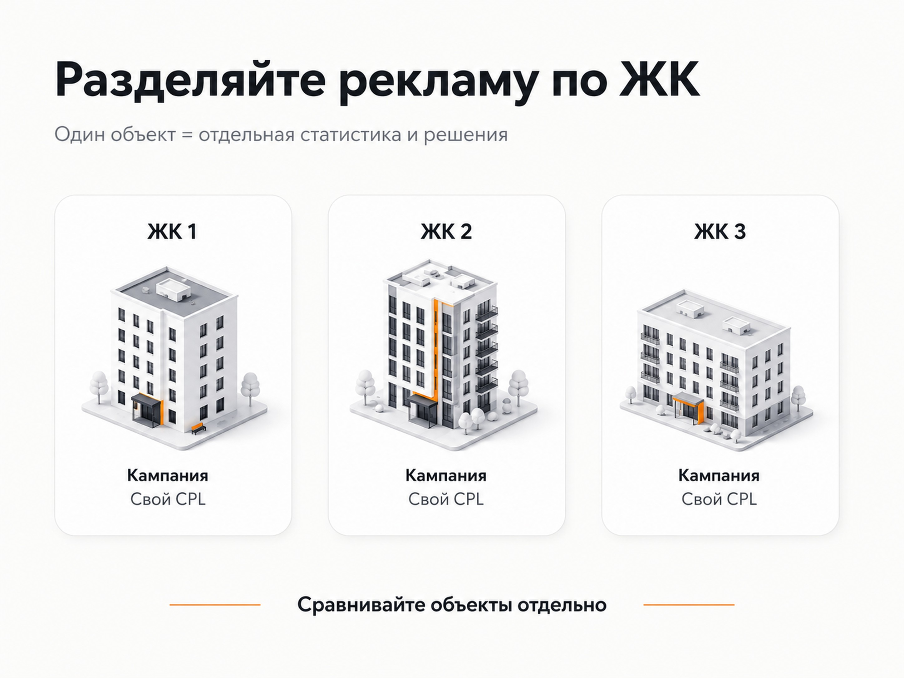

Блог о платном трафике
Контекстная реклама новостроек: как получать заявки из Яндекс Директа
Контекстная реклама новостроек позволяет работать с людьми, которые уже выбирают квартиру, сравнивают жилые комплексы, районы, планировки и условия покупки. Основной источник такого трафика в России - Яндекс Директ.
Но в недвижимости недостаточно собрать запросы вида «купить квартиру в новостройке» и направить их на сайт застройщика. На результат влияют структура рекламных кампаний, привлекательность конкретного ЖК, посадочная страница, аналитика, качество обработки обращений и данные, на которых обучаются алгоритмы.
Особенно это заметно, когда одновременно рекламируются несколько жилых комплексов. Один объект может стабильно приносить обращения, а другой при похожих настройках почти не конвертировать.
Как работает контекстная реклама новостроек
Я бы разделил продвижение новостроек в Яндекс Директе на несколько направлений.
Поисковая реклама
Здесь мы работаем с уже сформированным спросом. Человек сам вводит запрос:
- купить квартиру в новостройке;
- новостройки в определенном районе;
- квартиры от застройщика;
- студия в новостройке;
- двухкомнатная квартира в новом ЖК;
- название конкретного жилого комплекса;
- квартира рядом с определенной станцией метро или локацией.
Преимущество Поиска - понятное намерение пользователя. Недостаток - высокая конкуренция за наиболее очевидные коммерческие запросы.
Поэтому нет задачи показать рекламу абсолютно по всем фразам. Нужно определить, какие сегменты спроса соответствуют конкретному объекту и его предложению.
Рекламная сеть Яндекса
В РСЯ пользователь не обязательно ищет квартиру непосредственно в момент показа объявления. Яндекс может находить аудиторию по интересам, поведению и другим сигналам.
Для новостроек этот канал полезен при работе с более широкой аудиторией и при возврате людей, которые уже интересовались квартирой, но не оставили заявку.
РСЯ нельзя оценивать только по стоимости клика. Гораздо полезнее смотреть, сколько стоят реальные обращения и какое качество этих заявок получает отдел продаж.
Ретаргетинг
Покупка недвижимости редко происходит после первого посещения сайта. Человек изучает район, сравнивает цены, смотрит планировки и возвращается к понравившимся вариантам.
Поэтому посетителей сайта можно дополнительно сегментировать, например:
- смотрели определенный ЖК;
- открывали несколько планировок;
- изучали условия покупки;
- начали заполнять форму, но не отправили ее;
- уже обращались в компанию.
Главная задача здесь - продолжить работу с человеком, а не многократно показывать ему одно и то же объявление.
Как разделять рекламные кампании
Одна из основных ошибок - объединить весь ассортимент застройщика или агентства в одну большую кампанию.
Если продвигаются разные ЖК, я предпочитаю разделять их. Так проще видеть реальную экономику каждого объекта.
Для каждого жилого комплекса могут отдельно анализироваться:
- рекламные расходы;
- поисковые запросы;
- стоимость клика;
- заявки с сайта;
- звонки;
- квалифицированные обращения;
- записи на просмотр;
- дальнейшие этапы продажи.
У меня был проект по продаже студий площадью 10-20 м² сразу в нескольких ЖК Москвы. Брендового спроса по отдельным объектам было немного, а часть общей семантики пересекалась. Под каждый ЖК были выделены отдельные кампании, а заявки с форм и звонки фиксировались раздельно.
Средняя стоимость заявки с формы составила 528 ₽, но по отдельным объектам CPL находился в диапазоне от 300 до 5000 ₽. Средняя стоимость звонка составила 2771 ₽. Один из ЖК при этом конвертировал значительно хуже остальных. Рекламные настройки сами по себе не могли сделать слабое предложение таким же привлекательным, как более востребованные объекты.
Подробный разбор - в кейсе «Продажа студий в Москве».
Этот пример хорошо показывает, почему средняя стоимость заявки по всему аккаунту может вводить в заблуждение. Нужно смотреть результат отдельно по каждому объекту.

Какие запросы использовать для рекламы новостроек
Семантику лучше формировать не как один огромный список ключевых фраз, а как набор сегментов спроса.
| Сегмент | Примеры намерения |
|---|---|
| Общий коммерческий спрос | купить квартиру в новостройке |
| География | новостройки в районе, у метро, в определенной части города |
| Тип квартиры | студия, 1-комнатная, 2-комнатная квартира |
| Брендовый спрос | название ЖК или застройщика |
| Характеристики объекта | готовая новостройка, определенная площадь или класс жилья |
| Условия покупки | квартира от застройщика, варианты покупки, действующие предложения |
Запрос и объявление должны соответствовать тому, что человек увидит после перехода.
Если пользователь ищет конкретный ЖК, логично отправить его на страницу этого объекта. Если он ищет студию в определенном районе, посадочная страница должна быстро показать подходящие варианты, а не заставлять человека самостоятельно изучать весь каталог застройщика.
При работе с ипотечной тематикой нужно отдельно учитывать требования Яндекса к рекламе финансовых услуг, если рекламодатель фактически предлагает соответствующие услуги.
Посадочная страница влияет на результат не меньше рекламы
Директ может привести целевого пользователя, но дальше работает сайт.
На странице новостройки человеку обычно нужно быстро получить ответы на несколько вопросов:
- где расположен объект;
- какие квартиры доступны;
- какие есть планировки;
- на каком этапе находится строительство;
- когда предусмотрена сдача;
- какие условия покупки действуют;
- как выглядит дом и территория;
- что находится рядом;
- как связаться с отделом продаж.
Объем информации зависит от проекта. Главное - чтобы пользователь сразу видел предложение, соответствующее рекламному объявлению.
Иногда для платного трафика отдельная посадочная страница работает лучше большого сайта.
Так было в моем проекте с trade-in недвижимости. У агентства существовал многостраничный SEO-сайт, но рекламный трафик перевели на отдельный лендинг под обмен старого жилья на новое. Упростили путь пользователя, переработали оффер и добавили квиз.
Основной поток обращений пришел через РСЯ. Заявки там обходились примерно в 1500 ₽, общий средний CPL держался около 1900 ₽, а стоимость квалифицированных обращений составляла примерно 1915-3010 ₽.
Подробный разбор - в кейсе «Агентство недвижимости, Trade-in».
Сам по себе квиз не является универсальным решением. В этом проекте он работал потому, что соответствовал конкретному предложению и помогал человеку пройти понятный путь до обращения.
Контекстная реклама одного ЖК и нескольких объектов
Если рекламируется один жилой комплекс, структуру можно строить вокруг самого объекта:
- бренд ЖК;
- район и ближайшие локации;
- категории квартир;
- преимущества объекта;
- релевантный общий спрос.
Если застройщик или агентство продает несколько ЖК, появляется дополнительная задача - правильно распределять рекламный бюджет.
Объекты могут сильно отличаться по спросу. Поэтому я не рекомендую автоматически распределять деньги между ними поровну.
Один ЖК может получать больше трафика и при этом давать дешевые квалифицированные обращения. Другой может расходовать тот же бюджет, но почти не приводить потенциальных покупателей.
Это уже вопрос не количества кликов, а экономики конкретного объекта.
Нужно считать качество заявок, а не только CPL
Для недвижимости обычной цели «форма отправлена» недостаточно.
Реклама может показывать хороший CPL, но отдел продаж будет получать:
- ошибочные номера;
- нецелевые обращения;
- людей с неподходящим бюджетом;
- клиентов, которые ищут другой район;
- пользователей, которые вообще не готовы покупать.
Поэтому желательно связывать рекламную аналитику с CRM и передавать дальнейшие статусы обращений.
Например:
клик → заявка → квалифицированный лид → консультация → просмотр → бронирование → сделка.
Яндекс позволяет передавать офлайн-конверсии из CRM в Метрику и использовать такие данные для анализа и оптимизации рекламных кампаний. Для сопоставления конверсии с визитом могут использоваться ClientID, телефон, email и другие поддерживаемые идентификаторы.
Для новостроек это особенно полезно. Алгоритму лучше получать информацию о качественных обращениях, чем оптимизировать рекламу исключительно под самое дешевое заполнение формы.
Почему нельзя оценивать рекламу только по средней цене заявки
Еще один пример из моей практики - продвижение коммерческих помещений в ЖК «Ватутинки Парк».
На старте проект получал около 7 лидов в месяц примерно по 6000 ₽. После переработки рекламы и квиз-воронки стоимость обращения удалось снизить примерно до 1700 ₽.
При этом из 12 полученных за один из периодов лидов 10 были квалифицированными.
Подробный разбор - в кейсе «Коммерческая недвижимость, ЖК Ватутинки Парк».
У проекта было необычное ограничение - клиенту требовалось не более определенного количества обращений. После достижения лимита рекламу приходилось останавливать.
Такие паузы мешали стабильной работе алгоритмов. Это хороший пример того, почему при автоматическом управлении рекламой имеет значение не только настройка кампаний, но и сам режим их работы.
Какие цели настраивать в Яндекс Метрике
Минимальный набор зависит от сайта, но для проекта недвижимости я обычно хочу видеть отдельно основные и промежуточные действия.
Основные:
- отправка формы;
- звонок;
- заявка через квиз;
- обращение через подходящий канал связи.
Дополнительно можно анализировать:
- просмотр планировки;
- переход к выбору квартиры;
- прохождение этапов квиза;
- посещение важных страниц;
- другие действия, которые показывают заинтересованность пользователя.
Но нельзя превращать каждое нажатие кнопки в основную конверсию для рекламной стратегии.
Цель должна помогать алгоритму искать потенциального покупателя, а не просто человека, который активно нажимает элементы сайта.
Яндекс Метрика позволяет использовать цели и сегменты в кампаниях Директа, а данные о реальных офлайн-конверсиях можно дополнительно передавать из CRM.
Специальные возможности Яндекса для недвижимости
Помимо обычных рекламных кампаний, у Яндекса есть тематический раздел для недвижимости.
В нем можно продвигать жилые комплексы, для которых имеется проектная декларация. Для размещения используются XML-фиды с информацией об объектах. Яндекс указывает, что полнота данных в фиде влияет на ранжирование предложений внутри тематического раздела.
Для проекта с большим количеством квартир такой формат стоит рассматривать отдельно от классических поисковых кампаний.
Требования к рекламе новостроек
У рекламы новостроек есть отдельные требования к модерации.
Для рекламы долевого строительства Яндексу требуется информация о застройщике и ссылка на Единую информационную систему жилищного строительства, где опубликована проектная декларация.
В текстовых объявлениях Директ формирует необходимое предупреждение автоматически после передачи требуемой информации. В графических объявлениях ЕПК, видео и креативах медийных кампаний соответствующее предупреждение нужно добавлять самостоятельно. Для агентств недвижимости и агрегаторов новостроек действует отдельный порядок, при котором название конкретного застройщика в стандартном предупреждении указывать не требуется.
Яндекс также указывает, что для продвижения строящихся объектов могут потребоваться подтверждающие документы.
Эти требования лучше учитывать до подготовки большого количества объявлений и креативов.
Сколько стоит контекстная реклама новостроек
Универсальной стоимости заявки для этой ниши нет.
Даже внутри одного проекта разные ЖК могут отличаться по CPL в несколько раз. Это видно и по моему кейсу с московскими студиями.
Поэтому сначала я бы определил экономику:
- Сколько компания может платить за продажу.
- Какая доля квалифицированных лидов превращается в показы или встречи.
- Какая доля показов заканчивается продажей.
- Сколько в итоге допустимо платить за квалифицированное обращение.
- Какой объем обращений нужен отделу продаж.
После этого можно рассчитывать рекламный бюджет.
Ориентироваться на среднюю цену лида конкурентов опасно. У другого застройщика могут отличаться объект, цена квартиры, район, маржинальность, отдел продаж и конверсия между этапами воронки.
Подробнее - в статье «Стоимость контекстной рекламы: цена, бюджет и расчет расходов».
Основные ошибки при продвижении новостроек
Чаще всего проблемы возникают не из-за одной неправильной галочки в рекламном кабинете.
Все ЖК объединены в одну статистику
Непонятно, какой объект действительно приносит клиентов, а какой расходует бюджет.
Рекламный трафик ведут на общую главную страницу
Человек ищет определенную квартиру или район, а после перехода должен самостоятельно искать нужный объект.
Оптимизация идет по любым заявкам
Алгоритм получает одинаковый сигнал и от потенциального покупателя, и от нецелевого обращения.
Звонки не учитываются
Для недвижимости часть потенциальных покупателей предпочитает звонить. Без коллтрекинга источник таких обращений теряется.
Рекламу постоянно останавливают
При частых остановках и резких изменениях автоматическим стратегиям сложнее использовать накопленные данные.
Пытаются получить самый дешевый клик
CPC сам по себе ничего не говорит о продаже квартиры. Более дорогой трафик может давать намного более качественные обращения.
Плохой объект пытаются компенсировать настройками Директа
Реклама увеличивает видимость предложения, но не меняет цену квартиры, расположение дома, планировку или другие характеристики продукта.
Как я бы запускал контекстную рекламу новостройки
Последовательность работы выглядит так:
- Разобрать ЖК, аудиторию и конкурирующие предложения.
- Проверить сайт или посадочную страницу.
- Настроить Метрику, звонки и передачу заявок.
- Разделить семантику по намерению пользователя.
- Отдельно выделить приоритетные ЖК и продуктовые сегменты.
- Запустить Поиск, затем тестировать РСЯ, ретаргетинг и другие подходящие форматы.
- Получать от отдела продаж информацию о качестве обращений.
- Передавать в аналитику квалифицированные статусы.
- Перераспределять бюджет в пользу объектов и связок, которые дают реальных потенциальных покупателей.
Первый запуск здесь является началом сбора данных. После появления статистики становится видно, какие запросы, объявления, аудитории, страницы и жилые комплексы действительно работают.
Что считать хорошим результатом
Для застройщика конечный показатель - продажа квартиры.
Но между рекламным кликом и договором проходит несколько этапов. Поэтому рекламную систему удобнее оценивать последовательно:
- стоимость обращения;
- стоимость квалифицированного лида;
- стоимость записи на просмотр или консультацию;
- стоимость бронирования;
- стоимость привлеченной продажи.
Чем длиннее цикл сделки, тем меньше смысла оценивать Яндекс Директ только по отчету рекламного кабинета.
В моих проектах по недвижимости стоимость обращения сильно отличалась даже между отдельными объектами одного типа. Поэтому при контекстной рекламе новостроек я смотрю не на одну «среднюю цену лида», а на связку: объект, источник трафика, посадочная страница, качество обращения и дальнейшее движение клиента по воронке.